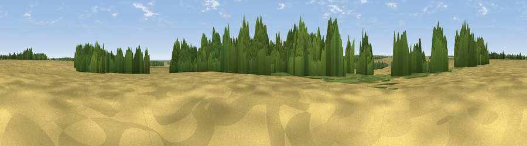

Viewpoint near Witham on the Hill
#43637 in England · top 83% of its area beats it · near Witham on the HillThe view, rendered

A 360° render of this exact spot computed from the terrain model, tree cover and land cover — summer colours, afternoon light, calibrated against photographs of famous viewpoints. Real trees, hedges and buildings will differ in detail.
The panorama
Grey silhouette: terrain skyline in each direction (720 bearings, Earth curvature and refraction included). Dashed green: skyline with trees (+15 m) and buildings (+8 m) as obstacles. Blue strip: how far the ground is visible on each bearing.
Where the view opens
Wedge length = distance to the farthest visible ground on that bearing (vegetation-aware). Rings at 10, 25 and 50 km.
What fills the view
62% cropland · 26% woodland · 10% grassland ·
Angular shares of the visible panorama (visual magnitude), not map area. Landscape diversity 0.40 (0–1 Shannon).
Key numbers
More beautiful places nearby
The staircase of upgrades: each row has a higher view potential than everything closer. Driving times are estimates from straight-line distance, calibrated against real road routing — check an actual route before setting out.
| Place | Direction | Drive | Score |
|---|---|---|---|
| Viewpoint near Ryhall | SSW · 5 km | ~10 min | 32.9 |
| Viewpoint near Toft | E · 5 km | ~10 min | 49.0 |
| Viewpoint near Belton | NNW · 25 km | ~41 min | 51.0 |
| Viewpoint near Barrowby | NNW · 26 km | ~42 min | 53.5 |
| Viewpoint near Pickwell | W · 27 km | ~43 min | 57.3 |
| Viewpoint near Great Gonerby | NNW · 27 km | ~43 min | 59.8 |
| Viewpoint near Great Gonerby | NNW · 27 km | ~43 min | 62.0 |
| Viewpoint near Burrough on the Hill | W · 27 km | ~44 min | 63.4 |
52.73317, -0.46621 · source: osm peak · position refined by local search. Computed location — check access rights before visiting.